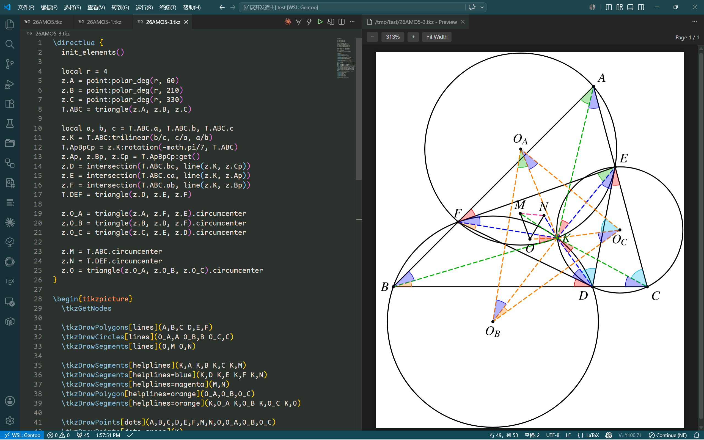
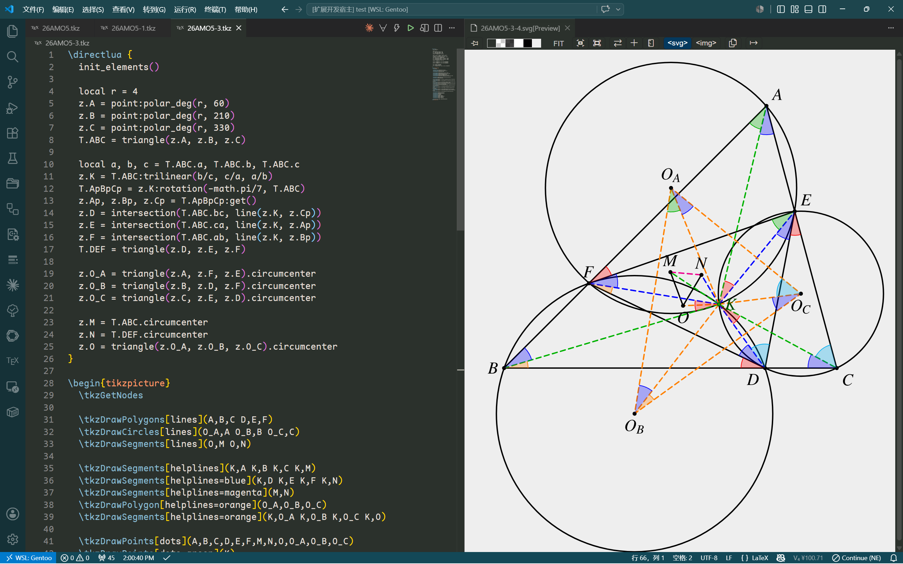
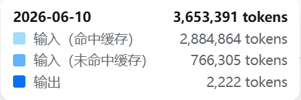

一个VSCode插件：支持TikZ预览
1. 起因
我的博客文章里面的插图大部分都是使用TikZ画的，而这个没有办法直接预览，就导致我需要在多个编辑器之间不断切换。
大致流程是这样的：
- 使用VSCode写文章的主体。（可以自动在编辑LaTeX的时候切换中英文）
- 期间使用VSCode写单独的TikZ代码。（可以自动补全TikZ函数）
- 同时使用KtikZ预览TikZ代码。（可以实时预览图片，方便修正语法错误和微调）
- 之后利用pdf2svg将TikZ代码转化成SVG图片，然后插入到文章中
- 最后利用Typora预览整个文章。（可以正确显示图片）
之前我使用Vibe Coding搓了一个插件，让VSCode的Markdown预览和鼠标悬停预览能够识别文档顶部的YAML元数据中的typora-root-url字段，这样保存在子文件夹里面的图片就能够正常加载了。
顺带着，也让VSCode的Markdown预览支持了NexT主题的Note标签。
这样预览看着就更舒服了。
因此，现在再写文章的时候就不需要上面第5个步骤了，最终文章的预览可以直接在VSCode里面完成。
这次，我的目标是干掉第3个步骤，这样就可以把所有的流程都留在VSCode里完成了。
2. 已有的类似解决方法
目前已有的一些能够预览TikZ代码的插件，基本都是基于tikzjax或它的移植，详细介绍可见这篇文章。
这个技术有两个问题：
- 不支持LuaLaTeX
- 不支持shell escape
第一个问题导致tkz-elements宏包无法使用，第二个问题导致tkz-fct宏包无法使用。
其中
tkz-elements宏包是用来画几何图形；tkz-fct宏包是用来画函数图像的，依赖shell escape来调用gnuplot
由于这些使用tikzjax插件底层都依赖于web2js 这个项目，它是将原始的TeX引擎编译为WASM。因此都没有办法支持LuaLaTeX。
能够支持LuaLaTeX的WASM引擎确实有，例如TeXlyre BusyTeX，但是也有两个问题：
- 使用LuaLaTeX至少需要
texlive-recommended这个级别的宏包集合，因此需要大量的空间：- WASM约占32MB；
texlive-recommemded约占200MB；- 如果是包含tkz系列宏包的
texlive-extra则占340MB。
- 它不支持shell escape。
因此，我最终决定，还是仿照KtikZ，使用本地已有的TeX环境。
3. Vibe Coding
这次我主要使用的是Claude Code配合deepseek-v4-pro。
具体实现方法是使用本地TeX环境在临时文件夹编译TikZ代码，然后使用PDF.js进行预览。
另外，这次使用了superpower这个skill，主要作用是在给出目标后会先通过提问来完善结构、补充细节。
它的使用体验感很好，很多问题在还没有开始写代码的时候就解决了。
开始生成的代码无法正确渲染PDF，不过通过几轮debug最终自己解决了。
之后又增加了SVG预览的模式。
截至功能基本完成（v0.2.1），花费的tokens如下：
| 模型 | deepseek-v4-flash | deepseek-v4-pro |
|---|---|---|
| 输入（缓存） | 2,109,696 | 55,529,600 |
| 输入（非缓存） | 244,834 | 167,874 |
| 输出 | 48,470 | 130,584 |
| 价格（¥） | 0.38 | 2.67 |
| 缓存命中率 | 89.7% | 99.7% |
其中deepseek-v4-flash部分主要是在使用superpower的时候，实际编写代码时其实是拉起了sub-agent来处理的。
也就是说，编写spec/plan的时候用的是pro模型，具体写代码用的是flash模型。
不过，实际上我看主要的代码在plan里都已经写好了。
4. Code Review
第二天，我又使用Codex（gpt-5.5）进行code review，找到了一个关键的bug，还有几个不影响使用的小问题。
关键的bug是如果在编辑完一个TikZ文件之后快速切换到另一个TikZ文件，会导致渲染的还是之前的文件，不会切换到新的文件。
这个bug我在实际调试的时候没有发现，因为之前在使用KtikZ的时候习惯了在编辑完文档之后等待图像刷新。这个完全是根据它给出的步骤复现的。
最终通过三轮debug解决了。
不过，解决完这几个问题，免费版的月余额就只剩12%了。
具体的Tokens用量如下：
| 项目 | 用量 |
|---|---|
| 输入（缓存） | 3,608,448 |
| 输入（非缓存） | 184,453 |
| 输出 | 19795 |
| 输出（思考） | 5715 |
5. 成果
最终的插件源代码见vscode-tikz-preview，VSCode插件见TikZ Preview。
使用插件的实际情况如下：
使用PDF预览：

使用SVG预览（调用SVG插件）：

具体的配置选项基本是照搬KtikZ的：
| 选项 | 默认值 | 说明 |
|---|---|---|
| latexCommand | pdflatex | 可根据实际需要改为lualatex或xelatex |
| shellEscape | false | 使用tkz-fct等宏包需要启用这个选项 |
| templatePath | "" | 默认为自带的模板文件 和KtikZ的默认模板相同 |
| templatePlaceholder | <> | 和KtikZ相同 |
| autoOpen | false | 在打开TikZ文件的时候是否自动打开预览界面 |
| autoOpenExtensions | .tikz .pgf .tkz |
TikZ文件的后缀 |
| previewMode | 预览模式，支持pdf和svg两种 | |
| svgConverter | pdftocairo | PDF转换成SVG的命令 可选pdftocairo和pdf2svg |
其它的使用体验也和KtikZ是一致的，停止编辑1s之后，会自动编译文件并渲染到右侧。
如果编译出现错误，会输出在下面的输出栏。如果是使用PDF模式，错误也会显示在右边的预览区域。
因此，如果之前使用的是KtikZ的话，可以无缝切换到这个插件。
顺带说一句，KtikZ可以只使用QT6进行编译，这样就不用依赖KDE组件了，不过需要一点修改。
具体方法和patch可见我的Gentoo仓库。
6. 感想
6.1. Tokens用量
之前在网上有讨论每天用一亿tokens如何如何，对此评价不一。
这次实际从零开始写了一个小项目，从上面的表格可以看到，使用了超过50M的tokens。
当然，大部分其实都是多轮对话的缓存（中间没有中断过会话，也没有压缩过上下文）。
而这一共花了多长时间呢？5个小时。
因此，如果是重度使用Vibe Coding，一天烧一亿tokens并不算多。
6.2. 编写skill
完成一定功能之后，发布新版本是一个比较机械且无聊的事情。于是我决定让Claude Code来自己完成这个任务。
它自动调用了skill-creator来创建了一个skill，并将我的要求自动转换成了skill文件。之后，我只用输入bump major/minor/patch version，他就会自动发布新版本，并更新ChangeLog和README文件。
不过，这种自动生成的skill文件务必要手动检查一下，否则很有可能造成错误的修改。
6.3. 慎用resume
第二天我在修改代码的时候，顺手使用了claude --resume，然后Tokens就爆炸了。好死不死的，我还连着resume了三次，于是：

未命中的输入tokens数量甚至超过了昨天的4倍！！！
这就导致，虽然第二天我只是用Claude Code更新了一些文档，花的钱几乎和第一天持平了。。。